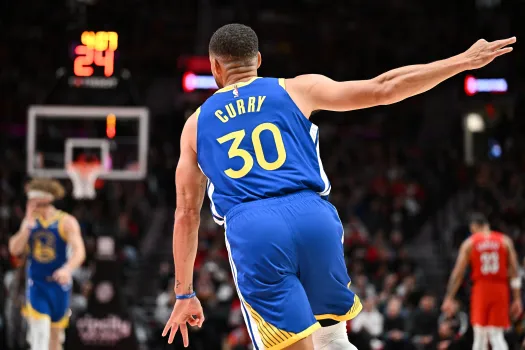

Kobe Bryant
Kobe Bean Bryant (/ˈkoʊbi/ KOH-bee; August 23, 1978 – January 26, 2020) was an American professional basketball player. A shooting guard, he spent his entire 20-year career with the Los Angeles Lakers in the National Basketball Association (NBA). Widely regarded as one of the sport's greatest and most influential players of all time, Bryant won five NBA championships and was an 18-time All-Star, 15-time member of the All-NBA Team, 12-time member of the All-Defensive Team, the 2008 NBA Most Valuable Player (MVP), and a two-time NBA Finals MVP. He ranks fourth in league all-time regular season and postseason scoring.

Michael Jordan
Michael Jeffrey Jordan (born February 17, 1963), also known by his initials MJ,[9] is an American businessman and former professional basketball player. He played 15 seasons in the National Basketball Association (NBA) between 1984 and 2003, winning six NBA championships with the Chicago Bulls. He was integral in popularizing basketball and the NBA around the world in the 1980s and 1990s becoming a global cultural icon.[11] His profile on the NBA website states, "By acclamation, Michael Jordan is the greatest basketball player of all time."

LeBron James
LeBron Raymone James Sr. (/ləˈbrɒn/;[1] lə-BRON; born December 30, 1984) is an American professional basketball player for the Los Angeles Lakers of the National Basketball Association (NBA). Nicknamed "King James", he is widely recognized as one of the greatest players in the sport's history and is often compared with Michael Jordan in debates over the greatest basketball player of all time. James has won four NBA championships from 10 NBA Finals appearances, having made eight consecutive appearances between 2011 and 2018. He also won the inaugural NBA Cup in 2023 with the Lakers and three Olympic gold medals as a member of the U.S. national team.
Stephen Curry
Wardell Stephen "Steph" Curry II (/ˈstɛfən/ STEF-ən;[1] born March 14, 1988) is an American professional basketball player and point guard for the Golden State Warriors of the National Basketball Association (NBA). Often considered the greatest shooter of all time,[2][3] Curry is credited with revolutionizing the sport by inspiring teams and players at all levels to more prominently utilize the three-point shot.He is a four-time NBA champion, a two-time NBA Most Valuable Player (MVP), an NBA Finals MVP, an NBA All-Star Game MVP, an NBA Clutch Player of the Year, and the inaugural NBA Western Conference Finals MVP. He is also a two-time NBA scoring champion, a ten-time NBA All-Star, and a ten-time All-NBA selection (including four on the First Team).